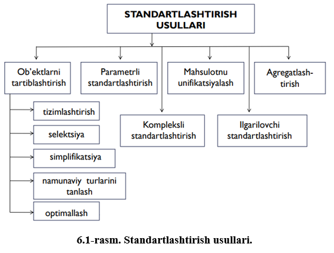
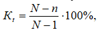
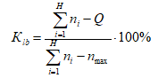

Oʻz DSt 996:2001 standartida “standartlashtirish” tushunchasiga quyidagicha ta’rif berilgan:
Standartlashtirish – mavjud yoki boʻlajak masalalarga nisbatan umumiy koʻp marta
foydalaniladigan
qoidalarni belgilash orqali ma’lum sohada eng maqbul darajali tartiblashtirishga yunaltirilgan faoliyat.
Standartlashtirishni amalga oshirishning bir qancha usullari mavjud (6.1-rasm).
Standartlashtirish usuli — bu standartlashtirish tamoyilar va maqsadlarga erishishni
ta’minlaydigan amal
yoki amallar majmuasi.
Tartiblashtirish koʻpxillikni boshqaruvi sifatida birinchi navbatda koʻpxillikni
qisqartirish bilan
bog’liq. Tartiblashtirish natijalari sifatida quyidagilarni koʻrsatish mumkin:
- tayor mahsulotning tashkil etuvchi buyumlarini kamaytiriladi;
- umumlashtirilgan buyumlar albomlari tuziladi;
- texnik, boshqaruv va boshqa xujjatlaning umumlashtirilgan shakllarini yaratiladi.
Tartiblashtirish universal usul sifatida alohida usullardan tashkil topgan:
- tizimlashtirish;
- seleksiya;
- simplifikatsiya;
- namunaviy turlarini tanlash;
- optimallash;
Standartlashtirish obyektlarni tizimlashtirish degani standartlashtirish obyektlar majmuasini
ilmiy
asoslangan ketma-ketlikda tasniflash va qatorlarga ketma-ket joylashtirishdir.
Standartlashtirish obyektlarning seleksiyasi - ishlab chiqarish va keyin ommaviy foydalanish
maqsadga
muvofiq deb qabul qilingan aniq obyektlarni tanlab olish bilan bogʻliq faoliyat.
Simplifikatsiya - ishlab chiqarish va keyin ommaviy foydalanish maqsadga muvofiq emas deb
qabul qilingan
obyektlarni aniqlash bilan bogʻliq faoliyat.
Misol. Alyuminiydan idishlar ishlab chiqilganda 50 ta tipoʻlchamli idishlar standartga kiritilgan
edi.
Keyin ularni soni 22 gacha qisqartirildi. 0,9; 1,3; 1,7 litrli idishlar ortiqcha boʻlib qoldi,
chunki
roʻyxatda 1,0 va 1,5 litrli idishlar bor edi
Optimallash - ma’lum sohada tanlangan omil boʻyicha eng maqbul darajada tartiblashtirishga va
eng
yuqori
erishish mumkin boʻlgan samaradorlikga qaratilgan faoliyat. Optimallasht natijasida bosh parametrlar,
sifat koʻrsatkichlari va iqtisodiy omillar aniqlanadi. Ob’ektlarni optimallash odatda hisoblar yordamida
ma’lum chegaralar qoʻyilgan ijtimoiy-matematik usul va modellarni qoʻllash yoʻli bilan hamda ilm va
texnika sohalarida prognozlar asosida amalga oshadi.
Unifikatsiya (koʻpxillikni boshqarish) - buyumlar tashkil etuvchi elementlarining
(oʻlchamlar,
turlar,
detallar va h.z.) ratsional nomenklaturasini oʻrnatish hisobiga bir xil vazifani bajaruvchi
obyektlarning sonini kamaytirishdan iborat boʻlgan standartlashtirish usuli.
Standartlashtirish ob’ektlarning namunaviy turlarini tanlash – bu ob’ektlar uchun namunaviy
turlarini ishlab chiqish, namunaviy konstruktiv, texnologik, tashkiliy va iqtisodiy yechimlarni
belgilashga
qaratilgan faoliyat. Namunaviy turlarini tanlash degani vazifasi bir xil boʻlgan ob’ektlarning
barchasini bitta belgi boʻyicha ifodalash.

Standartlashtirishning asosiy tamoyillari
Zamonaviy standartlashtirish quyidagi tamoyillarga asoslanadi:
- tizimlilik;
- takrorlanuvchanlik;
- variantlilik;
- oʻzaro almashinuvchanlik.
Tizimlilik tamoyili standartni tizim elementi sifatida ta’riflaydi va standartlashtirish
obyektlarining
mohiyatiga koʻra oʻzaro bog‘liq boʻlgan standartlar tizimini yaratishni ta’minlaydi. Tizimiylik
shuningdek standartlashtirish boʻyicha faoliyatga qoʻyiladigan talablardan biri xisoblanadi va
standartlar talabla-rining oʻzaro kelishilganligi, bir-biriga zid emasligi, unifikatsiyalashganligi va
takrorlanishlarning istisno etilganligini koʻzda tutadi.
Standartlashtirishda takrorlanuvchanlik tamoyili bitta umumiy xususiyat – vaqt va makon boʻyicha
takrorlanuvchanlik xususiyatiga ega boʻlgan buyumlar, jarayonlar, munosabatlar qoʻllanilishi mumkin
boʻlgan obyektlar doirasini belgilashni bildiradi.
Standartlashtirishda variantlilik tamoyili standartlashtiriladigan obyekt tarkibiga kiradigan
standart
elementlarning oqilona turli-tumanligini (oqilona tur xillari minimumini ta’minlash) yaratishni
bildiradi.
Oʻzaro bir-birining oʻrnini bosish tamoyili (texnikaga nisbatan) turli vaqtda va turli joyda
tayyorlangan bir xil detallarni yig‘ish yoki almashtirish imkoniyatini koʻzda tutadi.
Standartlashtirish quyidagi tamoyillarga muvofiq amalga oshiriladi:
- standartlarni ixtiyoriy qoʻllanish;
- standartlarni ishlab chiqishda manfaatdor shaxslarning qonuniy manfaatlarini imkon qadar hisobga
olish;
- milliy standartlarni ishlab chiqishda xalqaro standartlarni asos sifatida qoʻllanish, xalqaro
standartlarning talablari OʻzRning geografik va iqlimiy oʻziga xosliklariga, texnik va texnologik
xususiyatlariga nomuvofiqligi oqibatida yoki boshqa asoslarga koʻra yoki OʻzRda oʻrnatilgan
protseduralarga muvofiq ravishda xalqaro standartni yoki uning ayrim qoidalarini qabul qilishga qarshi
chiqqan boʻlsa bunday qoʻllanish mumkin emas deb tan olingan holatlar bundan istisno;
- mahsulot ishlab chiqarish va uning muomalada boʻlishi, ishlarni bajarish va xizmatlarni
koʻrsatishga
standartlashtirish maqsadlarini bajarish uchun zarur boʻlgandan ortiq darajada toʻsqinlik qilishga yoʻl
qoʻyilmasligi ;
- texnik reglamentlarga zid boʻlgan standartlarning belgilanishiga yoʻl qoʻymaslik;
- standartlarni bir xilda qoʻllanish uchun shart-sharoitlarni ta’minlash.
Shuningdek standartlashtirishning asosiy prinsiplariga quyidagilar ham kiradi:
– me’yoriy hujjatlarni ijtimoiy, iqtisodiy, texnikaviy zarurati va maqbulligini inobatga olgan holda
ularni ishlab chiqish maqsadga muvofiqligi;
– ob’ektlarga qoʻyiladigan talablarni kelishib olish va me’yoriy hujjatlarni amalga joriy etish
muddatlarini muvofiqlashtirish yoʻli bilan metrologik ta’minlashni qoʻshib hisoblab oʻzarobog‘langan
ob’yektlarni standartlashtirishning kompleksligi;
– me’yoriy hujjatlarni fan va texnikani hozirgi zamon yutuqlariga, ilg‘or tajribaga, qonun
hujjatlariga
muvofiqligini ta’minlash;
– standartlashtirishning hamma bosqichlarida me’yoriy hujjatlarni oʻzaro bog‘liqligini va
kelishilganligi, boshqarishning barcha pog‘onalarida ularni oʻxshash ob’yektlari uchun qaytadan ishlab
chiqilmasligi;
– amaldagi me’yoriy hujjatlar, standartlashtirish boʻyicha dasturlar va ish rejalari toʻg‘risidagi
axborotlarni oshkoraliligi;
– koʻpchilik daxldor tomonlarning kelishuviga erishish asosida me’yoriy hujjatlarni tasdiqlash;
– me’yoriy hujjatlarning sertifikatlashtirish maqsadlari uchun yaroqliligi;
– standartlashtirish sohasida zamonaviy axborot tizimlari va texnologiyalarni qoʻllash va hakozo.
Standartlashtirish darajasi – buyumning standart tarkibiy qismlar bilan jihozlanganlik darajasi.
Standart tarkibiy qismlarga konstruktorlik hujjatida spetsifikatsiyada havola qilingan davlat va
tarmoq
standartlari boʻyicha tayyorlanadigan tarkibiy qismlar kiradi.
Buyumlarni yoki ulardagi tarkibiy qismlarni birxillashtirish va standartlashtirish darajasi quyidagi
koʻrsatkichlar yordamida aniqlanadi:
– qoʻllanuvchanlik koeffitsienti Kq takrorlanuvchanlik koeffitsienti Kt, loyihalararo (oʻzaro)
birxillashtirish koeffitsienti Klb.
Qoʻllanuvchanlik koeffitsienti buyumdagi tarkibiy qismlar xil oʻlchamlari sonining (originallarsiz)
tarkibiy qismlar xil oʻlchamlarining umumiy soniga foizlardagi nisbati boʻlib, ishlab chiqiladigan
buyumdagi tarkibiy qismlarning konstruktiv oʻzaro mos keluvchanlik darajasini tavsiflaydi:
bunda: n – buyumdagi tarkibiy qismlar xil oʻlchamlarining umumiy soni;
n 0 – buyumdagi original tarkibiy qismlar xil oʻlchamlarining soni.
Buyumning xil oʻlchami – ushbu xildagi va ma’lum qiymatli parametrlar bilan tayyorlangan buyum (xil
oʻlchamlari soni konstruktorlik hujjatining spetsifikatsiyasidagi tarkibiy qismlar nomining soniga mos
keladi). Original tarkibiy qismlarga ushbu buyum uchun birinchi marta ishlab chiqilgan tarkibiy qismlar
kiradi.
Qoʻllanuvchanlik koeffitsienti nafaqat xil oʻlchamlari soni boʻyicha, balki tarkibiy qismlar soni
(dona), narxi, massasi va mehnat sarfi (K qd, K qn, K
mq va h.k.) boʻyicha ham hisoblanishi mumkin.
Ushbu korxonada tayyorlanadigan buyum tarkibiy qismining narxi sifatida zavoddagi tannarxidan, sotib
olinadigan tarkibiy qismlar uchun esa - sotish narxidan foydalaniladi.
Takrorlanuvchanlik koeffitsienti buyumdagi takrorlanuvchi tarkibiy qismlar sonining undagi tarkibiy
qismlarning umumiy soniga nisbati (buyumning takrorlanuvchi tarkibiy qismlar bilan toʻyinganligi)
foizlarda aniqlanadi va buyumning loyiha ichida birxillashtirilganlik darajasini, shuningdek ushbu buyum
ichida tarkibiy qismlarning oʻzaro almashinuvchanlik imkoniyatini ham ifodalaydi:

bunda N – buyumdagi tarkibiy qismlarning umumiy soni.
Loyihalararo (oʻzaro) birxillashtirish koeffitsienti birxillashtirsh hisobiga qisqartirilgan
tarkibiy
qismlar xil oʻlchamlari sonining birgalikda tayyorlanadigan yoki foydalaniladigan buyumlar tarkibiy
qismlari xil oʻlchamlarining eng koʻp qisqartirilishi mumkin boʻlgan soniga nisbati kabi foizlarda
aniqlanadi.

Bu yerda: Н – koʻrilayaotgan loyihalarning (buyumlarning) umumiy soni;
n i – loyiha (buyumlar) dagi tarkibiy qismlar xil oʻlchamlarining soni;
n max – loyiha (buyum) tarkibiy qismlari xil oʻlchamlarining eng koʻp soni;
Н loyihalar (buyumlar)dan tuzilgan guruhda qoʻllaniladigan tarkibiy qismlar xil oʻlchamlarining
umumiy
soni;
q j – j nomli tarkibiy qism xil oʻlchamlarining soni;
m – koʻrilayotgan loyihalar (buyumlar) tarkibiy qismlari nomlarining umumiy soni.
Agar ishlab chiqarishning texnik-iqtisodiy koʻrsatkichlari sifatida solishtirma kapital xarajatlar
olinsa, bu holda birxillashtirish va standartlashtirishning maqbul darajasi 67%, agar samaradorlik yoki
birxillashtirish va standartlashtirish darajasi olinsa, bu holda maqbul optimal daraja taxminan 65 %
boʻladi. Bu daraja eng katta tejamkorlikni ta’minlaydi.
Topshiriq. Talabalar oʻqituvchi tomonidan taqdim etilgan mavzuga oid tarqatma materiallardan
foydalangan
holda quyidagi savollarga javob topib yozishadi va himoya qilishadi.
Topshiriq savollari:
1. Standartlashtirish va uning usullari haqida aytib bering.
2. Standartlashtirishning asosiy tamoyillariga nimalar kiradi?
3. Standartlashtirish qanday tamoyillarga muvofiq amalga oshiriladi?
4. Standartlashtirishning loyihalararo (oʻzaro) birxillashtirish koeffisienti nima va u qanday
aniqlanadi?
5. Standartlashtirishning takrorlanuvchanlik koeffisienti nima va u qanday aniqlanadi?
6. Standartlashtirish obyektlarini tizimlashtirish, ularning seleksiyasi deganda nimani tushunasiz?
7. Optimallashtirish va unifikatsiyalash haqida aytib bering.
8. Qoʻllaniluvchanlik koeffisienti nima va u qanday aniqlanadi?
Mavzuni takrorlash uchun savollar
1. Standartlashtirish deganda nimani tushunasiz?
2. Standartlashtirish usuli deganda nimani tushunasiz?
3. Tartiblashtirish nima degani?
4. Unifikatsiyalash nima?
5. Standartlashtirishning qanday tamoyillarini bilasiz?
6. Standartlashtirish darajasi nima?